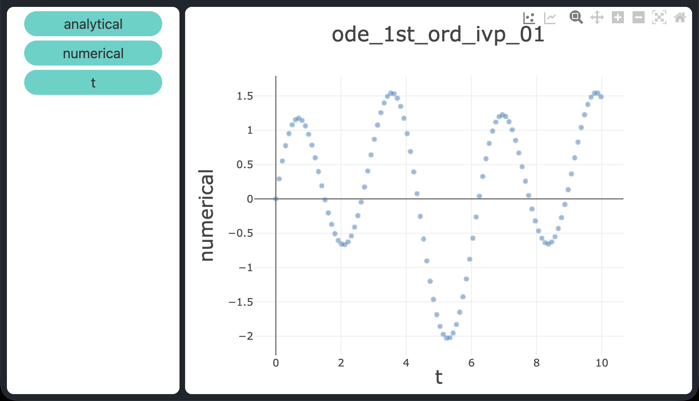

Ordinary differential equation solvers in C++ with boost.odeint
When performance and precise resource control are non-negotiable requirements — think embedded firmware,
real-time control loops, high-frequency simulators, or scientific kernels running on HPC clusters —
C++ remains the language of choice.
Unlike interpreted or just-in-time compiled environments, C++ compiles directly to native machine code,
gives the programmer deterministic memory management, and imposes zero hidden runtime overhead.
These properties make it a natural fit for computationally intensive numerical work, including the integration of
ordinary differential equations (ODEs).
The boost::numeric::odeint library (part of the well-known
Boost collection) brings industrial-strength ODE solvers
to C++ through a clean, generic interface built on C++ templates.
It provides a range of steppers — from fixed-step Euler to high-order adaptive methods —
while letting the programmer keep full ownership of memory layout and type choices.
This post presents three demonstration programs that solve ODE problems numerically using the
Dormand-Prince RK45 (dopri5) stepper with adaptive step control.
Each program compares numerical results against the known analytical solution and exports results to a CSV file
for straightforward visualisation.
The three problems tackled are: a first-order ODE, a system of two coupled
first-order ODEs, and a second-order ODE (reduced to a first-order system).
All three originate from the same set of problems used in the post
Ordinary differential equation solvers in Python,
making them a natural C++ counterpart to that Python-oriented work.
To get the source code see paragraph Download the complete code at the end of this post.
Prerequisites
The three programs require:
- A C++17-capable compiler (e.g.
g++orclang++) - The Boost library with
boost.odeintheaders installed:- macOS with Homebrew:
brew install boost - Debian / Ubuntu:
sudo apt install libboost-dev
- macOS with Homebrew:
build.sh in the repository and set the BOOST_INC variable
to the directory that contains the Boost headers on your system.
The default points to a Homebrew installation; adjust it if your setup differs.Then build all three programs with:
bash build.sh./ode_1st_ord_ivp_01
./sys_1st_ord_ivp_01
./ode_2nd_ord_ivp_01About the Dormand-Prince RK45 stepper
All three demos use the same stepper: dopri5, the Dormand-Prince Runge-Kutta method of order 4/5.
It is an explicit, adaptive single-step method that belongs to the embedded Runge-Kutta family.
At each step it computes two estimates of the solution — one of order 4 and one of order 5 —
and uses their difference as a local error estimate to adjust the step size automatically.
This means the integrator takes large steps in smooth regions and shrinks the step where the solution changes rapidly,
keeping the local truncation error within the requested tolerance without wasting function evaluations.
In boost.odeint the stepper is instantiated as:
using namespace boost::numeric::odeint;
auto stepper = make_dense_output(1.0e-9, 1.0e-9, runge_kutta_dopri5<state_type>());Conventions
Throughout this post the following conventions are adopted:
- $t$ is the independent variable (time)
- $x$ and $y$ are unknown functions of $t$, written in compact form (i.e. $x \equiv x(t)$, $y \equiv y(t)$)
- $x'$ denotes the first derivative of $x$ with respect to $t$; $x''$ denotes the second derivative
- Initial conditions are expressed as Initial Value Problems (IVP), also known as Cauchy problems
First-order ODE with IVP
Consider the following Cauchy problem:
$$x' = \sin t + 3\cos 2t - x, \quad x(0) = 0, \quad t \in [0,\,10]$$
whose analytical solution is:
$$x(t) = \tfrac{1}{2}\sin t - \tfrac{1}{2}\cos t + \tfrac{3}{5}\cos 2t + \tfrac{6}{5}\sin 2t - \tfrac{1}{10}e^{-t}$$
verifiable via Wolfram Alpha.
In C++ with boost.odeint the ODE must be expressed as a callable that writes the right-hand side into the
derivative argument.
For a scalar first-order problem the state type is simply a double:
typedef double state_type;
void ode_rhs(const state_type &x, state_type &dxdt, const double t)
{
dxdt = std::sin(t) + 3.0 * std::cos(2.0 * t) - x;
}integrate_adaptive, which advances the solution from
$t_0$ to $t_1$ using the dopri5 stepper with adaptive step control.
An observer lambda is called after every accepted step, providing the current state and time;
here it is used to record the numerical solution alongside the analytical value at each output point:
auto stepper = make_dense_output(1e-9, 1e-9, runge_kutta_dopri5<state_type>());
state_type x = 0.0; // x(0) = 0
integrate_adaptive(stepper, ode_rhs, x, 0.0, 10.0, 0.01,
[&](const state_type &x_obs, double t) {
double analytical = 0.5*sin(t) - 0.5*cos(t)
+ 0.6*cos(2*t) + 1.2*sin(2*t)
- 0.1*exp(-t);
csv << t << "," << analytical << "," << x_obs << "\n";
});System of two first-order ODEs with IVP
Consider the following coupled system:
$$\begin{cases}
x' = -x + y, & x(0) = 2 \\
y' = 4x - y, & y(0) = 0
\end{cases}
\quad t \in [0,\,5]$$
whose analytical solutions are:
$$x(t) = e^{t} + e^{-3t}, \qquad y(t) = 2e^{t} - 2e^{-3t}$$
verifiable via Wolfram Alpha.
For a system of $n$ equations the state type is a vector.
Using std::vector<double> of size two, the right-hand side becomes:
typedef std::vector<double> state_type;
void sys_rhs(const state_type &s, state_type &dsdt, const double /* t */)
{
dsdt[0] = -s[0] + s[1]; // dx/dt
dsdt[1] = 4.0*s[0] - s[1]; // dy/dt
}integrate_adaptive follow the same pattern
as the scalar case; the observer now receives a two-element state vector at each step:
state_type s = {2.0, 0.0}; // x(0)=2, y(0)=0
integrate_adaptive(stepper, sys_rhs, s, 0.0, 5.0, 0.01,
[&](const state_type &s_obs, double t) {
double ax = exp(t) + exp(-3.0*t);
double ay = 2.0*exp(t) - 2.0*exp(-3.0*t);
csv << t << "," << ax << "," << ay
<< "," << s_obs[0] << "," << s_obs[1] << "\n";
});Here the link to the full source on GitHub.
Second-order ODE with IVP
Consider the following Cauchy problem for a second-order equation:
$$x'' + x' + 2x = 0, \quad x(0) = 1,\quad x'(0) = 0, \quad t \in [0,\,12]$$
whose analytical solution is:
$$x(t) = e^{-t/2}\!\left(\cos\frac{\sqrt{7}\,t}{2} + \frac{1}{\sqrt{7}}\sin\frac{\sqrt{7}\,t}{2}\right)$$
verifiable via Wolfram Alpha.
A second-order ODE is not directly handled by first-order steppers.
The standard technique is to introduce the auxiliary variable $y = x'$ and rewrite the equation
as an equivalent first-order system:
$$\begin{cases}
x' = y \\
y' = -y - 2x
\end{cases}
\quad x(0) = 1,\; y(0) = 0$$
This reduction maps a scalar second-order problem onto a two-dimensional first-order system,
which boost.odeint handles identically to the coupled system of the previous section.
In C++ the right-hand side becomes:
typedef std::vector<double> state_type;
// s[0] = x, s[1] = y = x'
void ode2_rhs(const state_type &s, state_type &dsdt, const double /* t */)
{
dsdt[0] = s[1]; // x' = y
dsdt[1] = -s[1] - 2.0 * s[0]; // y' = -y - 2x
}1.0, 0.0.
The observer extracts only the first component ($x$) for comparison with the analytical solution,
because that is the quantity of physical interest:
state_type s = {1.0, 0.0}; // x(0)=1, x'(0)=0
integrate_adaptive(stepper, ode2_rhs, s, 0.0, 12.0, 0.01,
[&](const state_type &s_obs, double t) {
double ax = exp(-t/2.0) * (cos(sqrt7h*t) + sin(sqrt7h*t)/sqrt7);
csv << t << "," << ax << "," << s_obs[0] << "\n";
});sqrt7 = std::sqrt(7.0) and sqrt7h = sqrt7 / 2.0
are precomputed constants.Here the link to the full source on GitHub.
Visualising the results
Each program writes a CSV file to the current directory:
ode_1st_ord_ivp_01.csv— columns:t,analytical,numericalsys_1st_ord_ivp_01.csv— columns:t,analytical_x,analytical_y,numerical_x,numerical_yode_2nd_ord_ivp_01.csv— columns:t,analytical,numerical
- Drag the
tcolumn to the X axis - Drag
analytical(oranalytical_x/analytical_y) to the Y axis to plot the exact solution - Drag
numerical(ornumerical_x/numerical_y) to the Y axis to overlay the numerical approximation
atol = rtol = 1e-9), confirming that dopri5 resolves all three problems with high accuracy.

Analytical solution of the first-order ODE: $x(t) = \tfrac12\sin t - \tfrac12\cos t + \tfrac35\cos 2t + \tfrac65\sin 2t - \tfrac110e^-t$.

Numerical solution of the first-order ODE obtained with the dopri5 adaptive stepper from boost.odeint — visually indistinguishable from the analytical one at
atol = rtol = 1e-9.Download the complete code
The complete source code is available at
GitHub.
These materials are distributed under MIT license; feel free to use, share, fork and adapt these materials as you see fit.
Also please feel free to submit pull-requests and bug-reports to this GitHub repository or contact me on my social media channels available on the top right corner of this page.